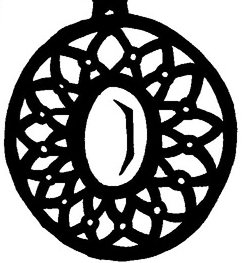

______________________________________________________________________________________________________
SCP-963
alias :
L'Immortalité
zone :
Autour du cou du Dr.Bright
statut :
Item a usage unique
usage :
pendant un combat
SCP-963 est un collier pesant 3kg, composé de métal et d'une pierre rouge en son centre permettant au Dr.Bright de ne jamais mourrir.
Avant d'appartenir au Dr.Bright,
ce collier était a la SCP Fondation, un groupe neutre au joueur aillant pour but de contenir et
analyser des anomalies dangereuses afin de proteger la population. Celle-ci n'est pas reconnue
par les gouvernements mais ceux-ci coopérent avec, dû a son immense pouvoir, aussi bien institutionel
que littéral.
Le collier en lui même fut découvert pendant un raid de la Fondation, qui a obtenue des renseignements
sur un groupe pratiquant la magie noire pour créer des artefacts puissants, dans les mains d'un pratiquant
s'étant donné la mort peut avant le raid. Plusieurs jours plus tard, le collier fut analysé par le Docteur Bright,
peut avant une brêche de confinement de SCP-682, qui
comme a son habitude causera un massacre, et tua le docteur.
Quelques jours plus tard, le collier fut rammassé par un membre du personnel de maintenance du site.
Au contact du collier, celui-ci s'écroula, et quand il se releva, ce fut le défunt docteur qui parla.
Il réussissa a convaincre ses supérieurs de la nature anormale du collier et la permission de faire plus de tests
lui fut donnée. Il découvra les propriétés de celui-ci ainsi que le maléfice s'étant abatut sur lui.